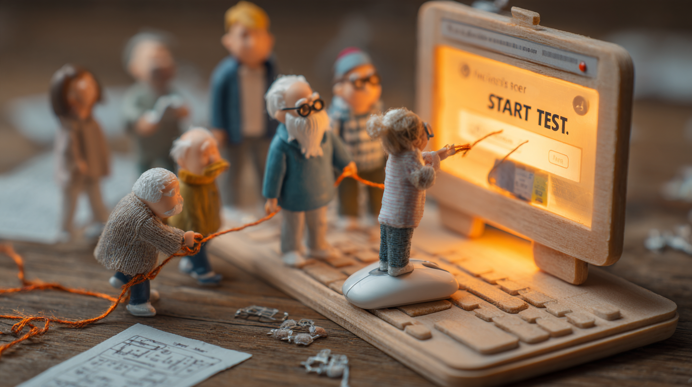

Серия «мини-человечки»: крошечные люди в крупном человеческом мире, макро-миниатюры.

Простые текстовые промпты, полный набор работ и промпты — в репозитории проекта.
Ролик, полностью сгенерированный нейросетью по текстовому описанию. Проигрывается прямо здесь.
PixVerse V6 (фирменная метка генератора в кадре). Полный текст промпта — в репозитории проекта.
Сквозной процесс: сценарий с таймингом → промпт генератора → генерация через API → титры.
20 сек, 480×854 (вертикальный 9:16). В репозитории — сценарий, промпты, два работающих скрипта (генерация и наложение титров) и версии «до/после».